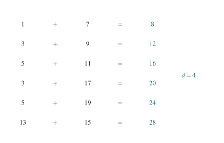

P0118 · 思维训练
十二个奇数配对成等差数列
用总和、奇偶和最小配对和缩小候选，再给出真实配对。
1 题目
给定十二个数 。将它们分成六组，每组两个，使六个组内和按从小到大排列后成为公差 的等差数列。求 ，并给出一组配对。相等数值的两个位置各使用一次。

每一行表示一个真实配对，右侧列出六个等差组和。
2 提示
六个组和的总和已知，而且每个组和都是偶数。把这些条件与最小组和的范围结合起来。
3 解答展开 / 收起
六个组和一旦构成等差数列，它们的首项与公差就受到总和的约束。奇偶性和最小组和进一步缩小候选范围，最后再给出实际配对。
3.1 组和的总和与奇偶性
总和逐项相加为 。分组只改变加法的结合顺序，所以六个组和的总和也必为 。若它们依次是 ，相加时首项 出现六次，公差的系数为 ，因此：
每个原数都是奇数，两奇数相加为偶数，所以首项 和每个组和都为偶整数。两个相邻组和之差 也为偶整数。
进一步，令 ，则 被 整除。式（1）的右侧 也被 整除，因此 被 整除；而 被 整除，故 本身被 整除。
3.2 公差的范围
最小可能的两数和是 ，所以 。由 得 。正的四倍数中只剩 ，相应 。
3.3 配对的构造
为区分重复数，把两个 记为 ，两个 记为 。可作如下配对：
每个数的位置恰好出现一次。
逐组相加得到 。相邻差分别为 、、、、，所以确为公差 的递增等差数列。
必要条件已经证明其他正公差不可能，这个构造又证明 可行，因此唯一答案为 。
4 评注
总和、奇偶性和最小组和限制了公差；配对则证明筛出的公差可以实现。将重复出现的数暂时分别标记，可以清楚地核对每个位置是否恰用一次。